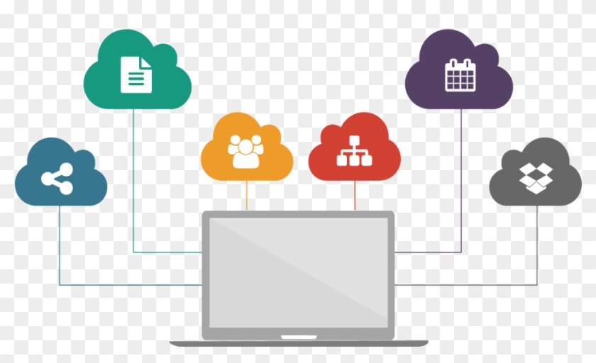

loading





loading
Cloud computing is the delivery of different services through the Internet. These resources include tools and applications like data storage, servers, databases, networking, and software.Cloud computing is the usage of different services on the internet for performing operations such as storing, managing and processing data on a common storage that can be accessed from anywhere rather than one particular system. Instead of being stored directly on your own personal device, cloud-based data is stored on servers owned by companies such as Amazon, Microsoft and Google and is made accessible to you via the internet. Whether you are accessing your Gmail or streaming your movies through Netflix or listening to your favourite songs on Spotify, you are a customer of a cloud services provider.
Yes the data in the Cloud can be secure but still there is the posibility of hackers hacking into the cloud and steal your data. The cloud can be more secure that the data kept in the hardisk of your own pc as the hackers and hack into your system in many ways and steal your data.The data that you save with cloud service providers may likely be safer than the information you've stored in your computer's hard drive. Hackers can use malware and phishing emails to get the information stored on your own devices. They might freeze your computer, demanding a ransom before they'll release the files and data they've frozen. It is secured by the companies providing the services but there are still precausion that the user can take inorder to fully secure the data in the cloud. Here are some ways to do so:
SaaS is a software distribution and licensing model in which software is accessed online via a subscription rather than purchased and installed on individual machines.
Platform as a service (PaaS) is a complete cloud development and deployment environment with resources to create everything from simple cloud-based apps to sophisticated, cloud-enabled business systems.
Infrastructure as a Service (IaaS) is a cloud computing service in which businesses rent or lease computers in the cloud for compute and storage. Users can run any operating system or application on the rented servers without incurring maintenance or running charges.